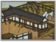

Enables
- Buildings: 
Basic Building Statistics (can be modified by difficulty level, arts, skills, traits and retainers)
- Cost: 1000
- +100 to wealth from commerce in this province
- +6 stables of superior warhorses
Description
No horse goes to war willingly.
This province is ideally suited to horses and animal husbandry. By investing here, the quality of the horse stock improves, leading to better mounts for all cavalry in the clan's armies. This improves the charge bonus of all cavalry too. Horses were always vital to samurai warfare, as nearly all of them fought as cavalry before the Sengoku Jidai. The animals were highly valued, judging by the elaborate harnesses and trappings that their riders bought. Warhorses also had to be hardy to withstand the rigours of campaigning. Horses used by mounted archers were so well trained that the rider could control them while standing in the stirrups and firing his bow with both hands. Most samurai were good horsemen, and some were recognised by their fellows as exceptionally good: Tokugawa Ieyasu was widely regarded as a superb horseman. He obviously knew the value of a good horse, because a grave marker at Nikko in Tochigi prefecture shows the burial place of the horse he rode at the Battle of Sekigahara in 1600.